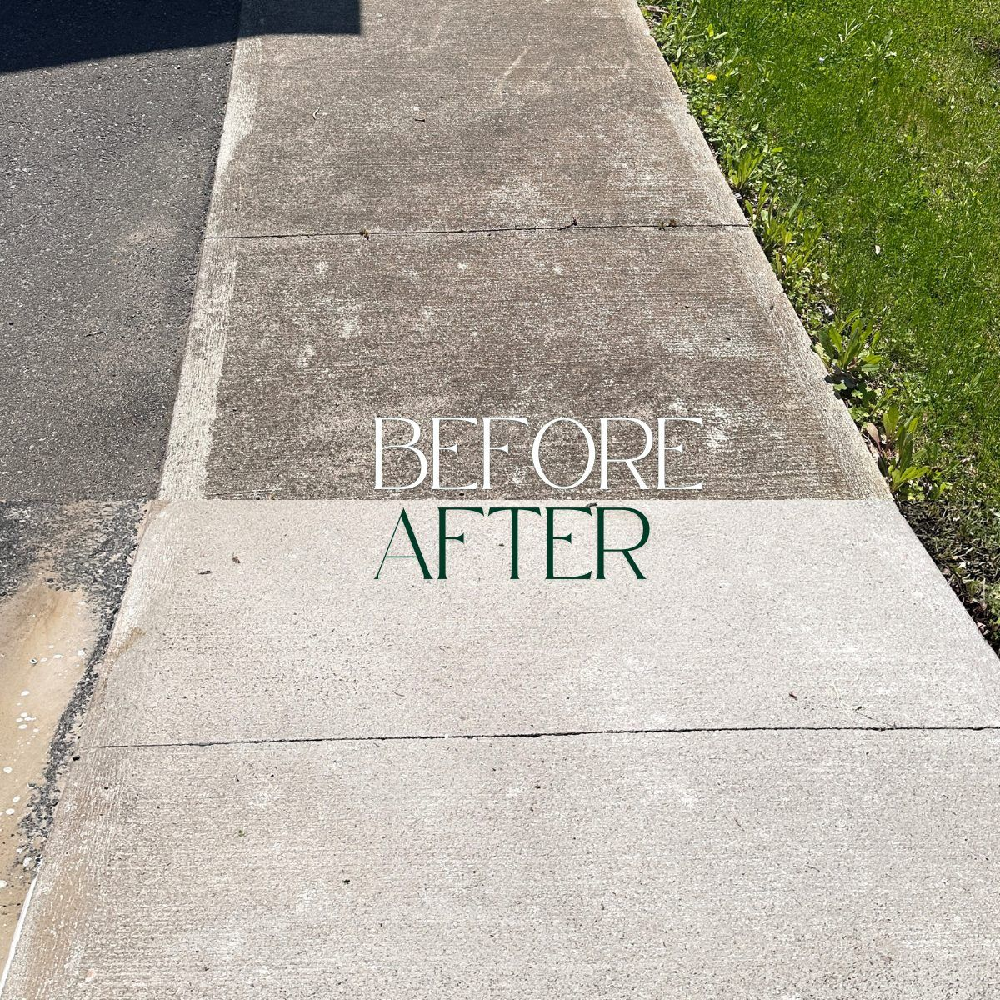

Quick answer
Order matters. Do the roof, driveway and walkways now, while it's dry and above freezing. Wait until most of the leaves are down (mid to late November for a lot of the HRM) before cleaning the gutters. Then get your holiday lights and any snow-removal plan sorted before the first big storm.
Winter is hard on the outside of a house in Halifax. It's wet, it freezes, it thaws, and it freezes again, and every crack, clog and patch of moss gets a few months of that. Most of the jobs that help are small, but they get a lot less pleasant once the weather turns. Here's what we'd do, in the order we'd do it.
Now: Deal With the Roof
If you've got moss or heavy algae up there, now is the time. Moss holds water against your shingles, and in winter that water freezes and pushes on them. We covered the whole thing in our guide to removing roof moss, but the short version is that a roof that goes into winter clean has a much easier season than one carrying a wet sponge.
You can do a first check yourself from the ground. Walk around the house and look at the roof, with binoculars if you've got them. Missing, lifted or curling shingles are a job for a roofer, not for us, and they're better fixed before snow lands on them.
If winter beats you to it, a moss problem isn't an emergency and it can wait until spring. Low-pressure roof cleaning runs $279 to $999 depending on the size of the roof.
Now: Clean the Driveway and Walkways
Algae and moss on concrete are slick. Wet, they're bad enough, and frozen they're worse. Nova Scotia freeze-thaw also pushes moisture into concrete and stone, and organic growth sitting on the surface holds even more of it there. Cleaning it off before the cold comes is easier on you and on the surface.

A concrete walkway before and after cleaning.
Our pressure washing for concrete and driveways runs $75 to $120 for a one-car driveway and $150 to $240 for a two-car.
Now: Decks, Fences and Windows
These are the last-call jobs. Wood stays damp longer once the temperature drops, so mildew on a deck or fence gets a head start under the snow. Our deck and fence cleaning is a clean and brighten with no sealer involved, so if you stain or seal your deck, that part is yours to do after it's clean and dry.
Exterior windows are the same story. Washing them when the water might freeze on the glass isn't much fun for anyone, and you'll be looking through them during the shortest days of the year, so it's worth doing them before the cold arrives.
Mid to Late November: Gutters Go Last
Gutters are the exception to "do it now." Clean them in October and the last trees to drop their leaves will fill them up again. Wait until most of the leaves are down, and get it done before the ground freezes. A gutter full of wet leaves turns to a gutter full of ice, and that's heavy, hard on the fascia, and a good way to get water backed up under the shingles.
Check the downspouts while you're at it. A clear gutter with a blocked downspout still backs up, and the downspout end should be sending water a few feet away from the foundation, not dumping it beside it.
If you're going on a ladder, go early
Frost makes rungs, shingles and gutters slick quickly. Late November mornings are a bad time to be on a ladder at all, which is a big part of why people hire this one out. Our gutter cleaning uses vacuum equipment, so nobody leans a ladder against your fascia. We wrote more about the schedule in how often to clean your gutters.
Before the First Storm: Holiday Lights
If you want lights, the best time to hang them is before there's snow on the roof and frost on the ladder. Our holiday lighting starts at $649 and covers the design, installation, in-season service calls, January takedown and off-season storage. We cover the whole HRM for this one. If you're weighing options, we wrote up what holiday lighting costs in Halifax and permanent vs. temporary lights.
Before the First Storm: Snow Removal
This is the one service that isn't HRM-wide. We run a small route through the Stonington Park pocket of West Bedford, on foot with a snowblower and shovel, and spots are limited. Seasonal plans start at $999, and when the route fills we start a waitlist rather than stretch the coverage area. If you're in that area, have a look at the plans. If you're anywhere else, line someone up early, and our snow removal cost guide shows what Halifax providers typically charge so you'll know a fair price when you see one. Existing WashCrafters cleaning customers get 10% off a snow-removal plan.
Five Things You Can Do Yourself This Weekend
- Disconnect your garden hoses and drain the outdoor taps so they don't freeze and split.
- Trim branches that hang over the roof. They drop debris into the gutters and break in ice storms.
- Check that your downspout extensions point water away from the foundation.
- Put away patio furniture and anything that collects water.
- Stake the edges of your driveway and anything hidden under snow, especially if someone else is clearing it for you.
What These Jobs Cost
| Job | Typical price | When |
|---|---|---|
| Roof cleaning | $279–$999, plus $150–$350 for heavy moss | Now |
| Driveway and walkway cleaning | $75–$120 (1-car), $150–$240 (2-car) | Now |
| Gutter cleaning | $1.50–$4.50 per linear ft, roughly $225–$375 for a typical bungalow | After the leaves drop |
| Holiday lighting | From $649 | Before the first storm |
| Snow removal (West Bedford only) | From $999 per season | Before the first storm |
Not sure which of these your house actually needs? Send us a photo and we'll tell you honestly, including when something can wait for spring.
Frequently Asked Questions
When should I start getting my house ready for winter in Halifax?
October. Do the roof, driveway and walkways while it's still dry and above freezing, clean the gutters once most of the leaves are down (usually mid to late November), and sort out holiday lights and snow removal before the first big storm.
When should I clean my gutters before winter?
After most of the leaves have dropped but before the ground freezes. Going too early can mean paying for a cleaning that the last trees to drop their leaves undo within weeks.
Is it too late to clean my roof once snow arrives?
It isn't an emergency. Roof moss and algae are slow problems, so if winter beats you to it, it can wait until spring. It's best done before snow sits on the roof, since moss holds water against the shingles and that water freezes.
Do you offer snow removal across Halifax?
No. Our snow removal is limited to the Stonington Park pocket of West Bedford, so we can get to every driveway fast after each storm. When the route is full we start a waitlist. If you're outside that area, it's worth lining up a local provider early.
Do you install holiday lights?
Yes, across the HRM. Installation starts at $649 and covers the design, commercial-grade LED lights, in-season service calls, January takedown and off-season storage.
How much does it cost to get a home ready for winter?
It depends on which jobs you need. Gutter cleaning runs $1.50 to $4.50 per linear foot, roof soft washing $279 to $999, and a driveway clean $75 to $360 depending on size. Most homes only need one or two of these in any given fall.

Kendall Scott
Owner/Operator, WashCrafters Exterior Home Solutions Inc., based in Bedford, NS. Fully insured, 5.0 stars on Google, and a soft-wash specialist across the HRM.